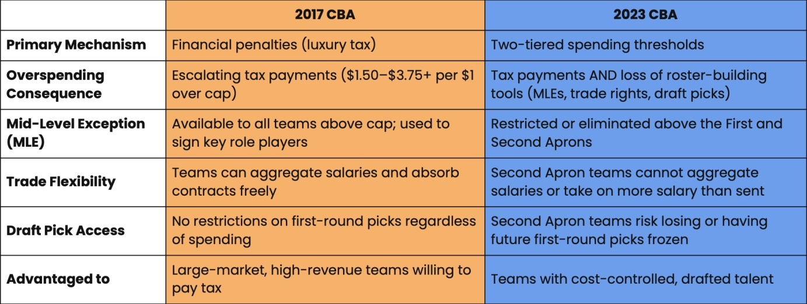

What's Changed? A Comparison Between the 2017 and 2023 CBAs
After the 2023 CBA was ratified, the NBA saw the implementation of the "Double Apron System." What is it, exactly?

A Dramatic Shift in Salary Regulation
Under the 2017 CBA — and for much of the NBA’s history prior — the NBA regulated team overspending through financial disincentives and penalties. Teams were discouraged from overspending, but they did not face structural or sufficiently restrictive prohibitions if they chose to overspend. Instead, the 2017 CBA provided for a salary cap, a luxury tax threshold, and escalating tax rates for teams exceeding that threshold, all derived from projected Basketball Related Income (BRI). Teams above the Tax Level paid increasing marginal rates, but in practice these penalties functioned as prices for overspending rather than punishments. For ownership on the cusp of a championship, there existed a price — an opportunity to buy flexibility if willing to absorb the financial burden. Wealthy franchises repeatedly demonstrated that luxury tax penalties were an acceptable cost of contention, most notably the Golden State Warriors and Cleveland Cavaliers, whose spending resulted in four consecutive Finals appearances against one another. That this pattern repeated across franchises and seasons suggests the luxury tax did not function as a meaningful constraint on spending.
The 2023 CBA marks a radical departure from this model. While it preserves the luxury tax, it introduces the First and Second Aprons — fixed thresholds above the Tax Level that, when crossed, fundamentally limit how teams can build and rebuild their rosters. A team exceeding the First Apron loses access to key cap exceptions such as the non-taxpayer mid-level exception and the bi-annual exception, tools that previously allowed expensive championship rosters to add crucial contributors. The Second Apron imposes even stricter limits: teams cannot aggregate salaries in trades, cannot take back more salary than they send out, lose access to the taxpayer mid-level exception and buyouts, and face draft pick penalties including frozen or displaced first-round selections. Unlike the 2017 regime, which imposed a predictable financial cost, the 2023 system restricts roster-building mechanisms themselves. Under the prior model, wealthy franchises could absorb overspending risk indefinitely; under the new regime, crossing the Second Apron risks losing draft capital and trade flexibility for years, regardless of ownership wealth.